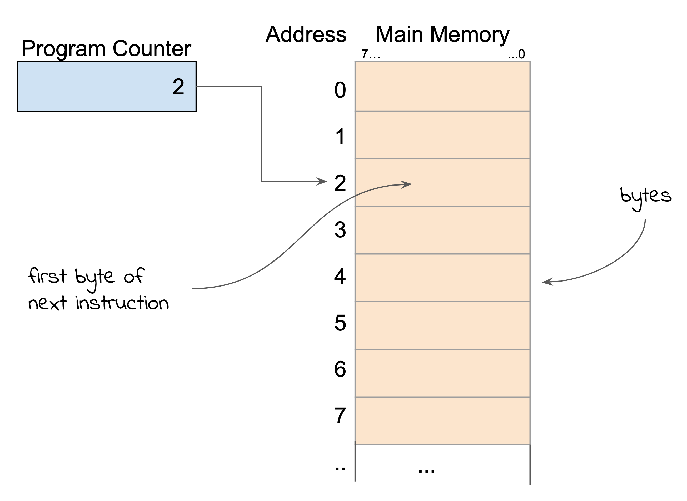
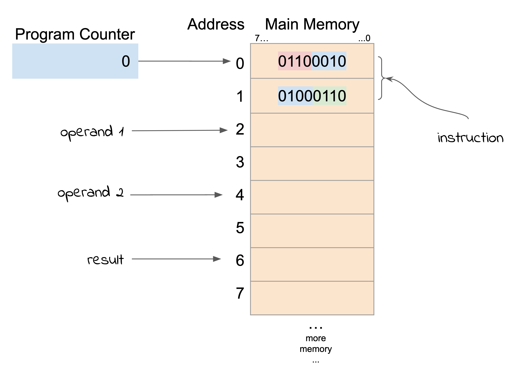
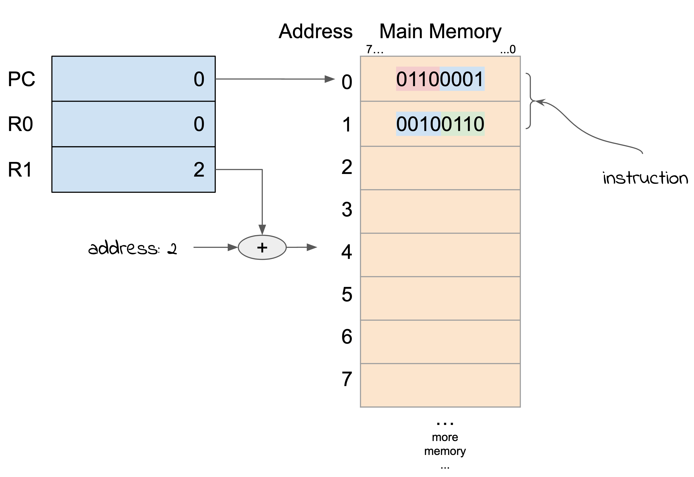
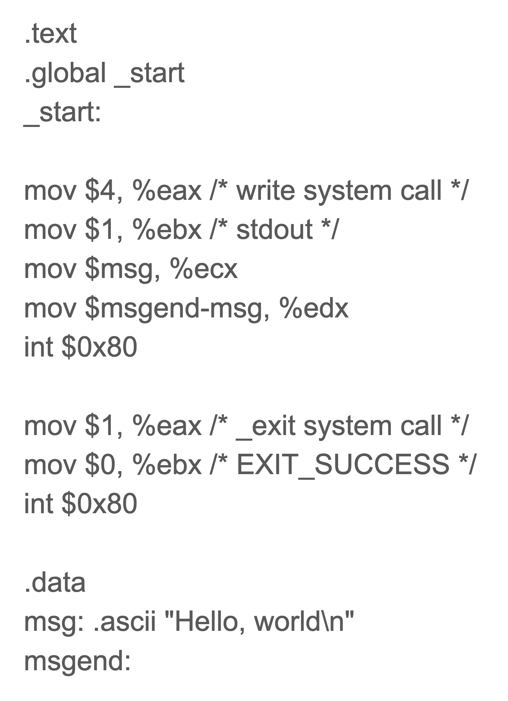

1.4 Instructions and Computer Architecture¶
The last “simple” type and how it is represented by binary numbers that I want to describe are computer instructions. Computer instructions are the building blocks of computer programs. They are instructions to the computer hardware, the Central Processing Unit or CPU, to carry out some operation. The operations performed by the CPU are very simple, eg add two numbers together, copy one part of the memory to another part, compare two areas of memory and execute different subsequent instructions depending on the result. By creating sequences of instructions (also known as programs) we can get the computer hardware to do what we want.
The storage of program instructions in the same memeory as the data (numbers, characters etc) was one of the breakthrough ideas that made modern computers possible. Before this idea (credited to John von Neumann in 1945) programs were often store elsewhere, for example on electrical plug-boards in the case of the ENIAC computer that was completed in 1945 at the University of Pennsylvania. In order to change a program, the programmers had to rewire the plugboard and this often took days or weeks. If the program instructions were represented in the same main memory as data, the program could be changed like any other data item.
FYI
In the history of computing there is some controversy over what was the “first” computer. Many machines have been developed over many many years, and depending on your definition of “computer” they might lay claim to be the first. For example, the abacus has been around for a very long time, probably as early as 2700BCE, but is it a “computer”? More recently, the ENIAC (1945) is claimed to be the first programmable, electronic, general-purpose digital computer (wikipedia). But the ENIAC is not a stored program computer! The programs are on plug-boards, and not in the main memory. Probably the first stored-program, general-purpose digital computer, was the Small-Scale Experimental Machine aka the Manchester Baby, which first ran a program from memory in June 1948. It had only 1024 bits of memory arranged in 32 bit “words”. Its first program was 17 instructions.
Before I start on the description of computer instructions I want to revisit the computer memory, specifically memory addresses. Each byte in the memory is numbered and this number is the address of the byte. Inside programs, particular bytes are referred to by their address. So, when an instruction wants use a value from memory, it specifies the address. A program consists of a sequence of instructions stored in the memory, and they are also referred to by a memory address.
As well as memory, a modern computer has set of smaller memories called registers that are used during program execution. It is possible to build a computer without these, but the speed of the computer would be drastically reduced. The reason is that the speed of operation of the main memory is much much slower than the technology used to build these smaller memories or registers. The registers are also special purpose, not for general use but for use in operations such as arithmetic or instruction decoding.
One very special register is called the program counter or PC. The PC contains the address of the instruction that is being executed. Since you could potentially have instructions anywhere in the memory, the PC is the size of a memory address. So if the maximum memory size of your computer is 4Gigabytes (roughly 4000 megabytes) then the largest address you need to represent is 4Gig. This needs 32 bits and so the PC has to be 32 bits.
By storing a value in the PC we indicate where the next instruction is. After instructions are executed (mostly) the PC is increased to the address of the next instruction in the sequence. I say “mostly” because there are instructions that change the PC to the address of instructions somewhere else. This is what we call a “jump”, causing the program to jump to somewhere else in the memory and start executing from that point.
The representation or coding of instructions in the memory depends on the type of CPU used. The instruction codes for Intel family processors (used in the Microsoft Windows machines) are very different to the instruction codes used by the ARM family processor used in newer Apple machines, and different again to the codes in microcontrollers.
The coding is broken down into several parts. There is always an operation code (usually called an “opcode”) and then a mixture of memory addresses, register addresses and extra bits controlling some aspect of the instruction. The other feature of modern computers is that the instructions are variable length - one or more bytes. In the early days before the idea of the 8-bit byte became popular, computer memories were divided into bigger chunks (eg 36 bits, 48 bits etc) called “words”, and each instruction was contained in a single word.
Obviously, if you need to refer to a physical memory address, then you need a field in the instruction which is the size of an address. For our earlier example this means a 32 bit or 4 byte field.
Modern computer instruction sets (the codes that represent instructions) are large and complicated. To understand the concept of representing instructions I’m going to use an invented set of instructions that are not actually used anywhere. This is a lot simpler and easier to follow. At the end of this I will have a branch to a description of a real machine and give you a chance to actually run programs using the instruction set. To understand the concepts of computing, that branch is not strictly necessary, but if you are interested you might have a look.
In the first version of my hypothetical machine I might have an instruction that looks like this in binary: 01100010 01000110 that means “add the number at memory location 2 to the number at memory location 4 and store the result in memory location 6. The instruction is stored in two bytes.
Here is a breakdown of the instruction:
Bits |
Meaning |
|---|---|
0110 |
code for ADD |
0010 |
address of operand 1 |
0100 |
address of operand 2 |
0110 |
address of result |
The actual opcode is the four bits 0110.
In memory, it looks like this:
I’m sure you can imagine other arithmetic operations that you might like to perform on memory. The problem with my hypothetical machine is that I’ve only allowed 4 bits for the opcode, so I can only have 16 different instructions. Real machines have more bits for the opcode, typically a full 8 bit byte or more, allowing more than 256 different opcodes.
Another problem with the hypothetical machine is that both the operands and the result are accessed directly in the memory. The reason this is a problem is that the main memory is slow compared to the circuitry of the CPU. I already mentioned the idea of a register and the Program Counter register that is made from faster technology. Most machines have many of these fast registers that are used for storage of intermediate results. The main memory is only accessed when absolutely necessary.
FYI
The ARM CPU, used in most mobile phones, has 16 main registers and two status indicator registers. Each of the registers is 32 bits wide and a memory address is 32 bits.
Registers can contain intermediate results of calculations, characters, status indicators, any binary information. They can also hold memory addresses and most machines allow you to use registers in the calulation of the address of operands. For example, if you want to fetch a value from an array at a particular index, you might store the index value in a register and instruct the cpu to fetch the contents of the memory indicated by that value. Early computers even had registers that were dedicated to this type of memory access and were called “index” registers. Today most machines have multipurpose registers that can be used for any binary information as well as being used as an index.
more here on architecture etc….
Assembler¶
It is certainly possible to write all your programs in nothing but binary machine instructions, but this would be extremely tedious and error prone! Most people write programs in high level programming languages such as C or Python. Unfortunately, the computer hardware only understands the binary machine instructions so we need some way of translating our high level language into the equivalent instructions. This is done with a special program called a “compiler”. The compiler knows the architecture of the computer and what instructions and registers are available and can translate all your variable declarations, arithmetic expressions, loops, if statements etc into the machine instructions that do the same thing.
But when we build a new computer architecture, that is a new design of instructions and registers, we have a bootstrap problem. We don’t have a compiler, just the binary instructions. The first way this problem was addressed was to design a simpler language that had instructions that were directly equivalent to the binary machine instructions. This language is called an “assembler” language.
Typically, assembly language consists of one statement per line and each statement is the equivalent of a single binary instruction code. The statement has the operation to perform as well as the registers and operand addresses involved. Also, there might be a label preceding the instruction that is associate with the address of the instruction. This label can then be used elsewhere in the program to refer to the location of the instruction. Here are a few examples:
Label |
Instruction |
Operands |
Comment |
|---|---|---|---|
start |
load |
R1,4 |
load operand from address 4 into register 1 |
add |
R1,8 |
add operand from address 8 to register 1 |
|
store |
R1, 12 |
store register 1 into address 12 |
These are only hypothetical examples. Real assembly language has other features to specify constants, blocks of memory, references to labels (addresses) and so on.
Here is an example of a real assembly language program
{kind=link}
The program that translates assembly language into binary is called an “assembler”. Assemblers are relatively simply programs to write and even more so if the assembly language is simple. It’s feasible to write an assembler completely in binary machine code to begin with, and then write a more sophisticated version in the initial assembly language and so on. Eventually writing a compiler for a high level language such as C. This is what we call a “bootstrap” process.
Today we already have powerful computers with high level languages and assemblers, so we don’t need to start from binary. We can write an assembler, or a compiler, for a new computer on an existing machine and use it to compile programs for the new machine.